Chris, Steve and Jay's journey across Czech Republic, Austria, Slovakia, Hungary and Germany.
Status
Dresden report to follow...
Trip outline
29 July — Austria
31 July — Slovakia
1 August — Hungary
6 August — Germany
Updates
Trip journal
Prague, Various locations
Tuesday, August 4 and Wednesday, August 5 2026
Christopher’s Birthday Celebrations
No in-depth blogging for our two days back in Prague, just some quick notes recording our activities for posterity.
Chris’s birthday drinking locations:
Savour: lining the stomach with a nice breakfast.
Manifesto: we had one beer here, Jay nearly fell in the paddling pool, we all decided it was too hot so moved on.
Beer Spot: several rounds of Flip 7. The plan was to move on to Jazz Dock to meet everyone at 4pm. Incoming rain meant we told them all to meet us at Beer Spot instead. Once it passed, onwards to Jazz Dock.
Jazz Dock: our intended venue for the night. Got there eventually, a great time was had by all.
Istanbul Kebab Shop: Chris’s favourite kebab guy was back and gave him a hero’s welcome (and extra meat). Great end to a great evening.
Next day = Hangover day.
Went for breakfast near Chris’s home in Švandovo Divadlo.
Decided to check out the city from FlyVista on top of Levels, cheeky buggers are now charging 275Kc for letting you up to the roof when it was previously free! Steve and Jay got inside some clear orbs for some reason.
Finished the afternoon at Cinema City together, watching the new Spiderman film, which to be honest, we all thoroughly enjoyed.
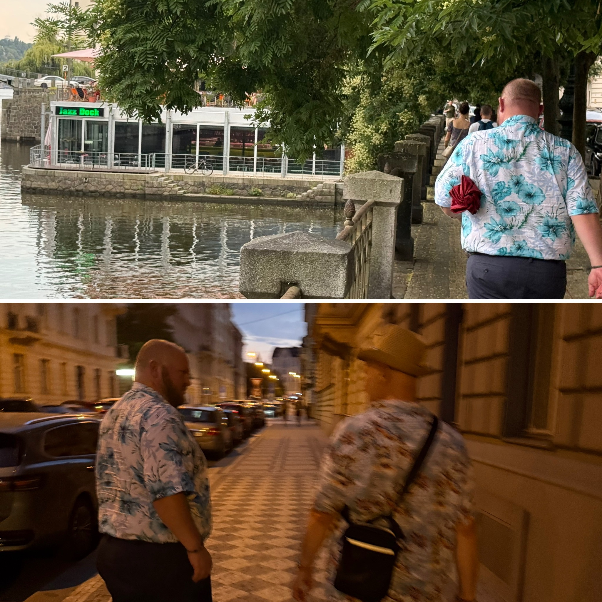
Top: Chris leads the way to Jazz Dock; Bottom: Steve leads the way to the kebab shop
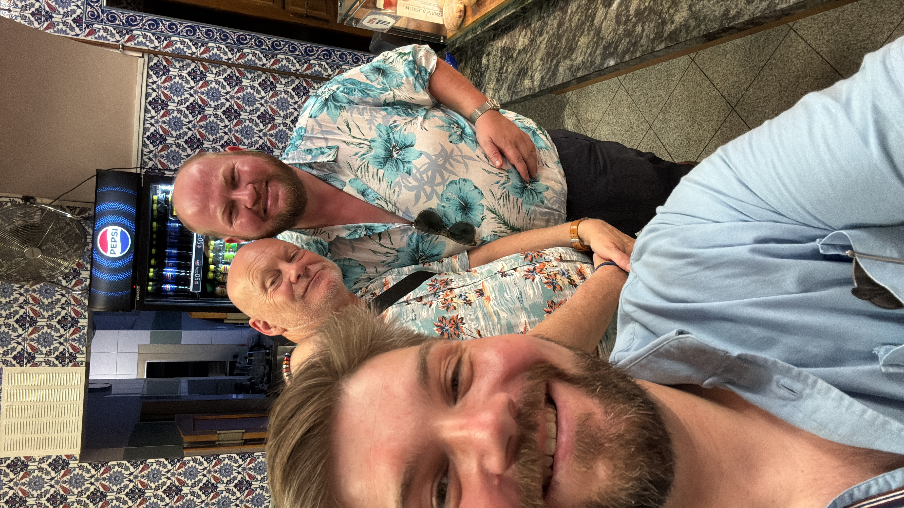
Birthday kebab shop
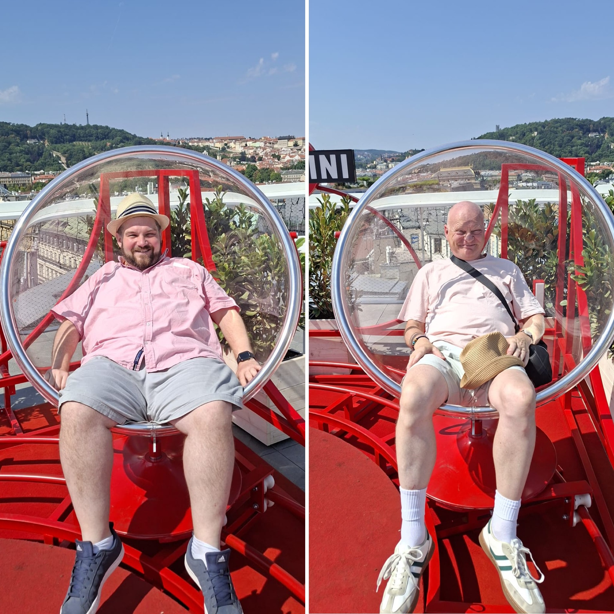
Steve and Jay in the orbs
RegioJet train 1033, somewhere between Budapest and Prague
Monday August 3, 2026
In Transit
The rest of our night out on Sunday was merry, increasingly so as the evening went on, and we covered several diverse and interesting conversation topics, including the colour of blood if found in stool (Steve’s medical mantra: “Crimson’s okay, scarlet = no way”) and Steve insisting upon his resemblance to a certain Hollywood star (see image below).
Monday morning came and it was time to leave our sauna / apartment, not before registering a complaint with Booking.com in the hope of getting some money back. In a final insult, the lift broke and so we had to walk down the five storeys of stairs, Jay lugging his cumbersome suitcase and getting drenched in sweat as a result.
The rest of the morning was more relaxed, a pleasant half hour tram ride across the Danube and through the city took us to Kelenföld station where we would be boarding our train back to Prague later that day. The station facilities left much to be desired (there weren’t any) but thankfully Chris had done his research and we burned away the hours in a huge air conditioned mall across the road from the station.
14:58 soon rolled around and with it the long yellow train that would take us on the 7 hour journey back to Prague. We climbed on board eagerly, looking forward to our luxurious business class cabin, only to be bitterly disappointed within minutes of departure. Our cabin, as with the rest of the train, was suffering from air conditioning failure. Not only that, but because the carriage was designed to always have air conditioning running, none of the windows were openable. Within 20 minutes we were all drenched through with sweat and worse still, the air con system was starting up only to cut out again minutes later; making the situation worse by providing false hope.
After taking as much as we could bear, Chris and Jay abandoned the cabin to seek out a cooler spot somewhere else on the train, eventually finding relief in standard class 3 carriages away. Steve, either due to having a firmer constitution or simply being glad of the peace and quiet, heroically stuck it out and acquainted himself with the Viennese businessman who was sharing the cabin with us, who thought that we were both Steve’s sons, and joked that since only Chris had popped back to check on him, it was clear which one of us Steve would be leaving his fortune to. “Yes,” agreed Steve, “the other one is very selfish!”
As the sun set and the Hungarian and Austrian countryside passing by our window gave way to the fields of the Czech Republic, the train’s air conditioning started to cope with the lower outside temperatures and the business class cabin was eventually habitable for the last few hours of the journey, bringing the three of us back together once more. A good few 60p bottles of Holba beer were drunk, as we shared reflections on the last 5 days. We pulled in to Prague’s main station at 22:25, said our goodnights and went our separate ways.
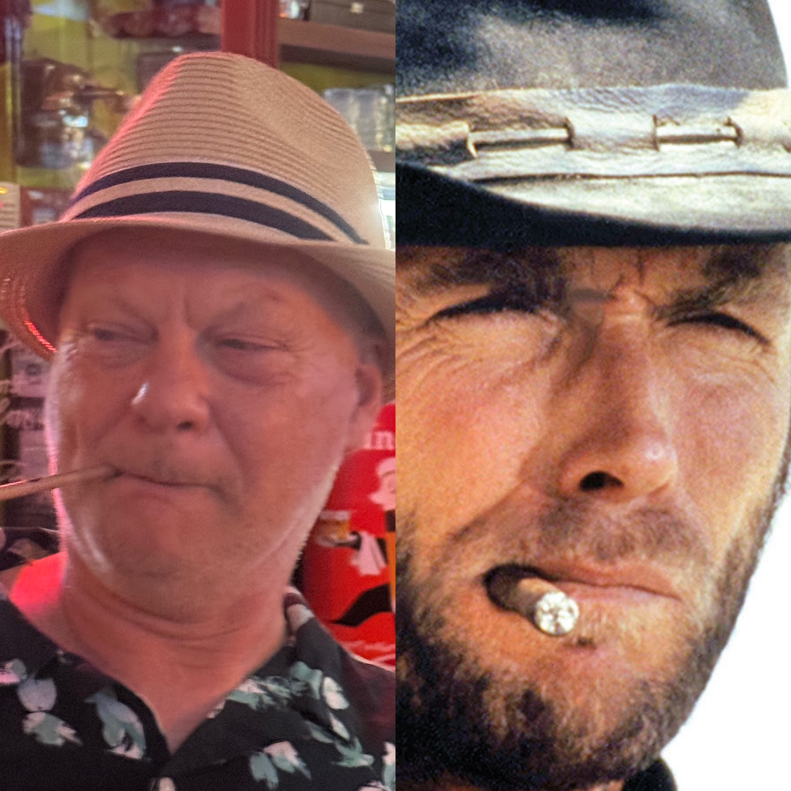
Separated at birth?
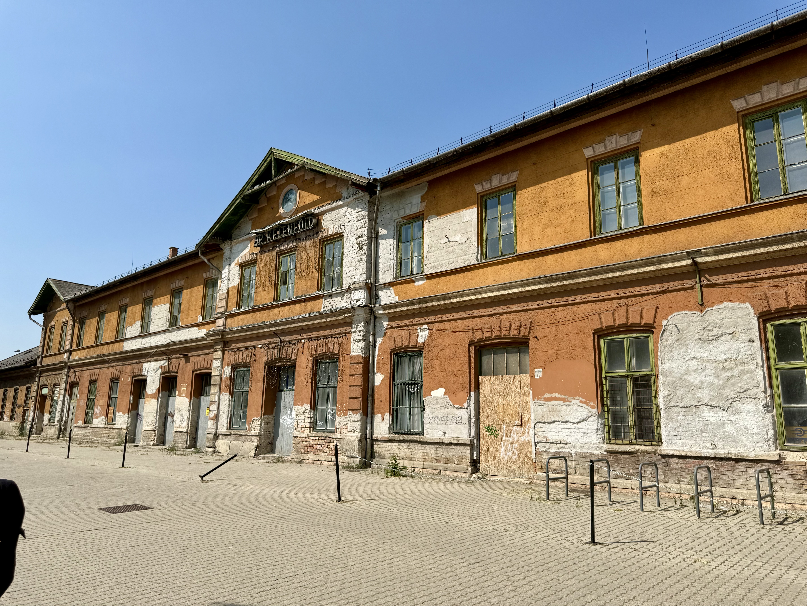
Kellenföld Station, Budapest
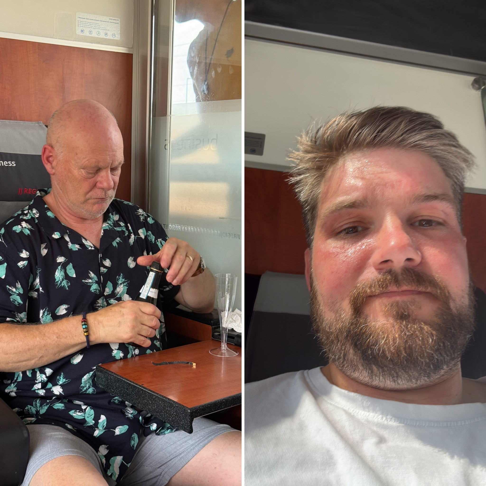
Steve enjoying business class; Jay not enjoying business class.
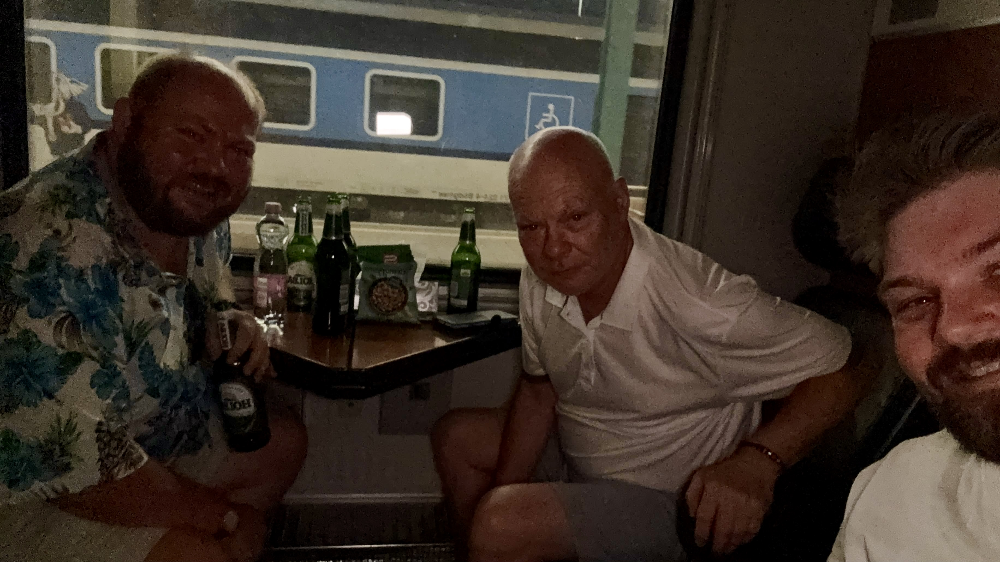
Reunited
Muter Cafe & Beer, Gozsdu Udvar, Budapest
Sunday August 2, 2026
Budapest, Hungary
We had a comfortable journey to Budapest and were greeted by a massive, bustling city, a stark contrast from our last stop at Bratislava. Checked in to our AirBNB with some minor difficulties with the door code, which soon turned into major difficulties with the air conditioning - more about that later.
Bags thrown in, freshened up and ready to go, we ventured out and found ourselves right in the middle of a very touristy area, jam-packed with restaurants, karaoke clubs and sports bars, as well as hundreds of people enjoying Saturday night drinks. The dinner venue of choice was Retro Goulash House, where our eyes were definitely bigger than our bellies. Chris and Jay ordered lángos, large bready circles with a Yorkshire pudding texture, and not knowing how big they were we ordered fries on the side. This was a mistake. None of us got close to finishing our meals and we had to be rolled out when we left.
Our next quest was to find some beer and we didn’t have far to go. We crossed the road and went into Fekete Kutya (The Black Dog). Not sure if it counted as a “ruin bar” but it was a bit of a sh*thole, however it had its charm. Chris asked the Hungarian barman what local beer was good, to which the reply came, “Hungarian beer is shit, we only serve Czech beer here.”
After some fruity artisanal pints we decided that actually we all quite like shit beer so moved on in search of another place. We came across Muter Cafe & Beer in the main arcade, which had an offer on - buy 3 beers, get 1 free. Chris’s face lit up like a child on Christmas morning.
With a free dart board readily available, a game of Round the World with our three travellers soon ensued. Since Steve and Chris got to outer bull before he managed to hit 1, Jay decided to sack it off and focus instead on trying to resolve the air conditioning situation. Messaging the host, she said that she couldn’t get anyone out to fix it until after we leave, but could offer a fan instead. With there being red weather warnings in place, the weather outside being 37/38, and the flat being even warmer, Jay went off to meet her and accept the fan. It ultimately made no difference and the night was hot, sweaty and uncomfortable.
The slightly cooler temperatures Sunday morning gave us the impetus to get up and out, and we took a wander down to the Danube to get some photos and see some sights. Another city, another castle, another hot and steep hill, but the views from the top were very good and we stopped nearby afterwards for a coffee and to complete the day’s crossword. The conversation that followed went like this:
Jay: “47 across. 1995 film about a piglet. Four letters. Babe isn’t it?”
Chris: “Pig in the city.”
J: “No, I think that was the sequel.”
C: “Jay, you’re a pig in the city!”
(Laughs)
J: “Thanks a bunch, that’s the second animal you’ve called me so far this holiday, after you said I looked like an escaped gorilla in Vienna.”
C: “Actually, you’re more like a boar. You’re not the pig in the city. You’re the boar on tour!”
This then evolved later in the day so now apparently I’m the “Bore on Tour”.
Speaking of being a bore, we took a short journey on the M1 line, which we later found out was the oldest electrified underground railway in Europe (C: “See Jay! I’ve taken you to see some boring old shit that you like without even knowing. I’ve got a knack for it!”) to Heroes Square, a large monumental square with a huge central column - but the statue at the top of the column has been taken down for conservation so all we saw there was some spikes coming out of it where the statue usually is. A nice stroll around the park led us to a lovely beer garden where we had some food and liquid refreshments. The heat was getting to us by this point, so we went back to the admittedly not-much-cooler AirBNB where Steve and Jay conked out for an hour. We have now come back out to Muter Cafe & Beer, where Chris fully intends to make them sit down and have a long think about the sustainability of their 4-for-3 offer.
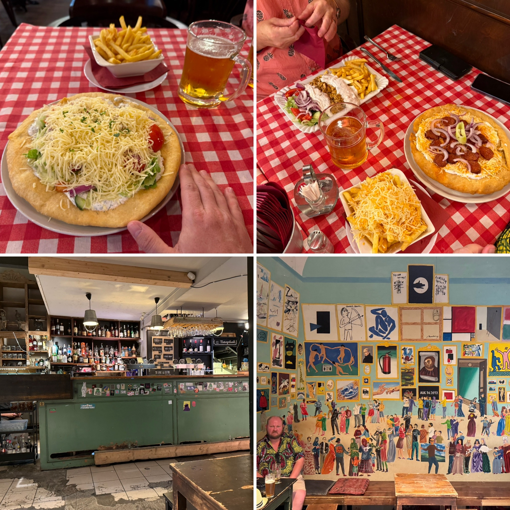
Top: Lángos and chips, and Steve’s gyros plate; Bottom: Fekete Kutya bar
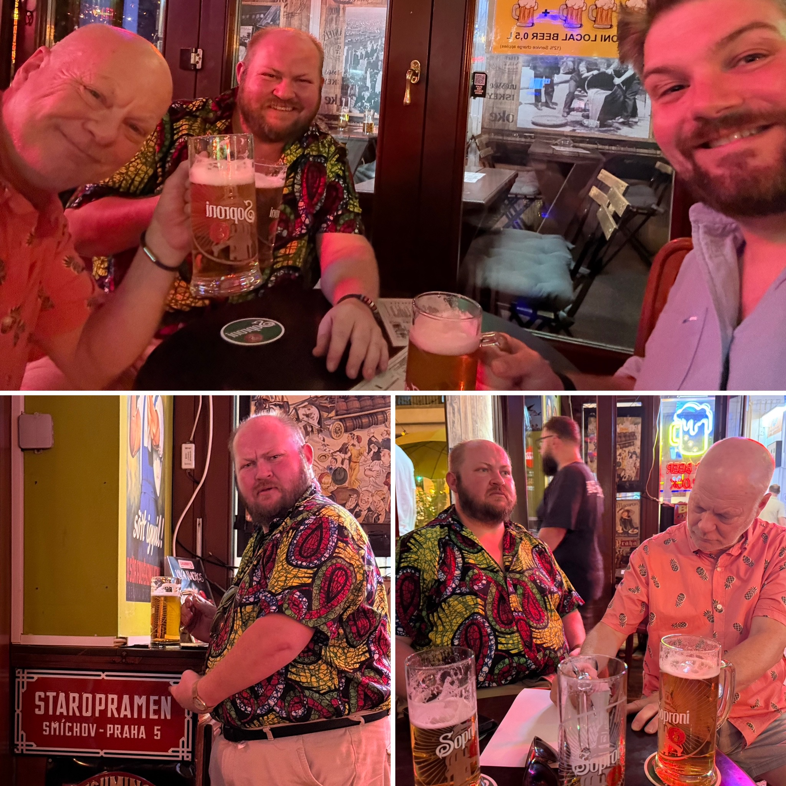
Top: The lads at Muter bar; Bottom left: Chris finds a reminder of home; Bottom right: Chris and Steve try to test their powers of recall to name all 31 Carry On films
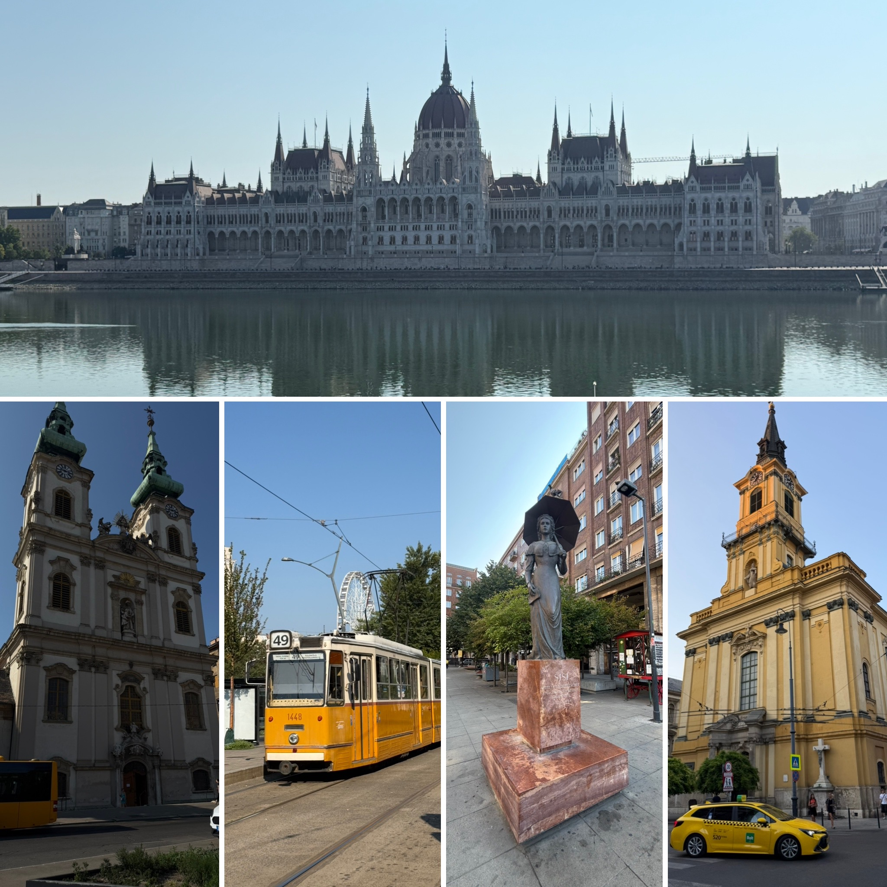
The sights of Budapest
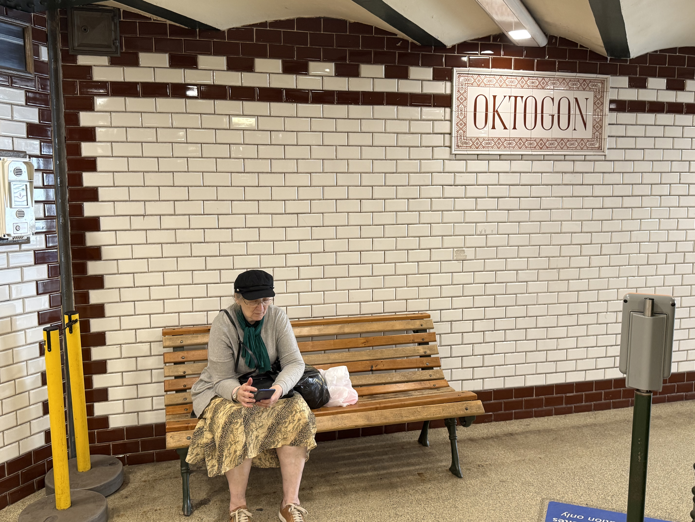
Metro line M1, Oktogon station
Urban Bistro, Ventúrska, Bratislava
Saturday August 1, 2026
Bratislava, Slovakia
Before our trip, Chris told us that Bratislava would be basically be a “little Prague”. He was right, the city centre here is not much bigger than Swansea city centre and there’s not an awful lot to see. We have mostly stuck to the centre so there could be more further out, but this is not somewhere you would need to spend more than 24 hours.
Stepping off the train, immediately felt like going back in time 40 years, compared with the massive modern station we had left behind in Vienna. The station was small, hot, and busy, with a huge communist mural on one wall in the arrival hall.
We took a stroll around the squares of the beautiful old town and whilst it was really pretty, about half an hour and we were done, not helped by the intense heat (38 degrees). We had dinner and then went for a few beers at a small bar along the side of the Danube river.
At the bar, Steve ordered a pot of tea whilst Jay and a Chris had a few beers and we all played cards. We had a lengthy discussion about how unusual it was that in the honey bottle that came with Steve’s tea, there was what looked like a bee inside, even more confusing because on closer inspection it was a wasp. We thought it might have been some sort of gimmick by the honey manufacturer, like a worm in a tequila bottle, but then Chris looked at the other honey bottles and none of them had one.
We headed back to the AirBNB, and found a local sports bar to spend the rest of the evening, but by this point the heat was taking its toll on all of us. After being lovingly told to “cheer up or f**k off” by Steve, Jay decided to take the latter option and call it a night.
This morning (Saturday) we all got up nice and early to check out the sights before the heat got too much - it was in the mid 20s at 08:00 - and we were all in better spirits.
The climb up to Bratislava castle was short but steep so we were all sweltering again by the time we reached the top, but the views of the Danube and the city from the top on such a beautiful morning were worth it.
A quick freshen up back at the AirBNB and then we checked out and headed to a local cafe for breakfast. Upon finding something crunchy in his mouth while drinking a chai latte Jay realised he too had been struck by the Bratislava insect curse as it was a dead fly which he’d accidentally bitten in half.
After a train delay of 40 mins in a boiling train station, we’re now back on the move for the 2hr trip to Budapest.
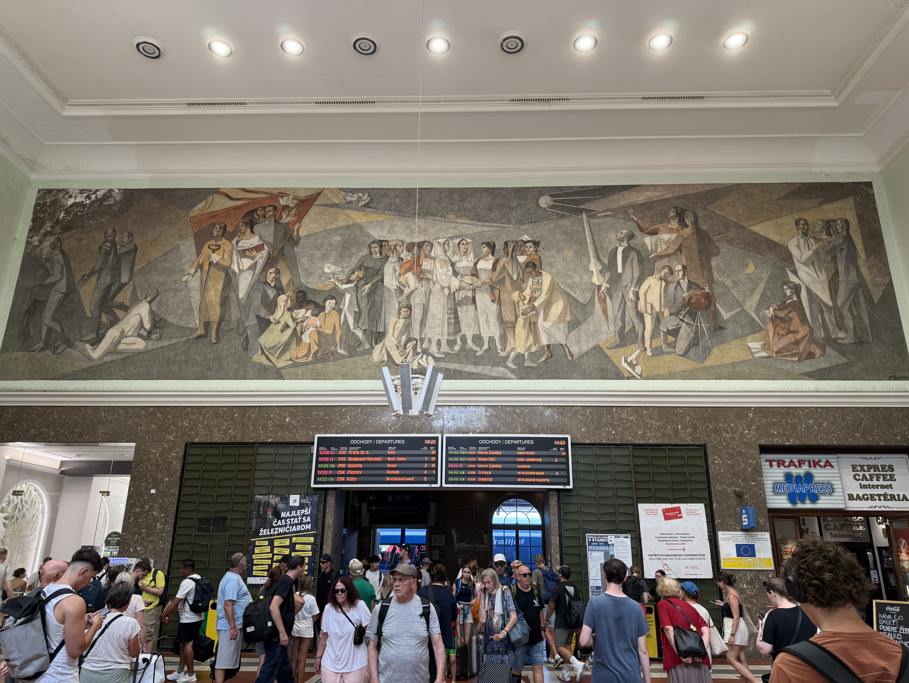
Bratislava hlavnà stanica (central station)
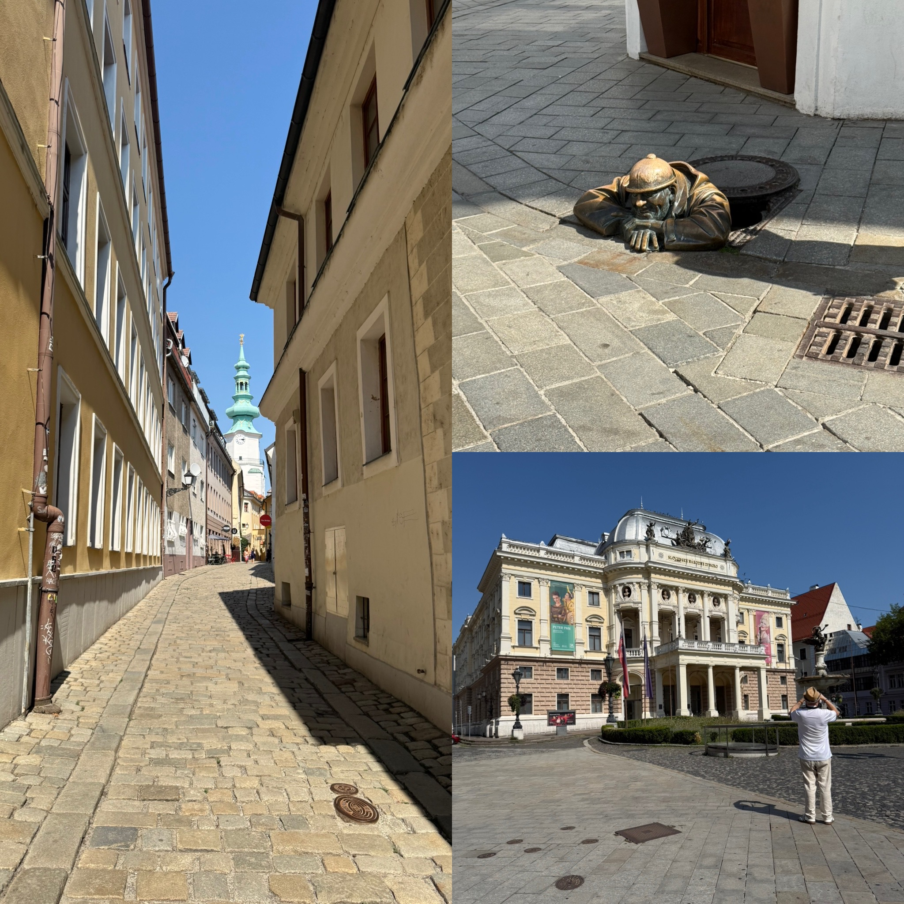
Old Town sights
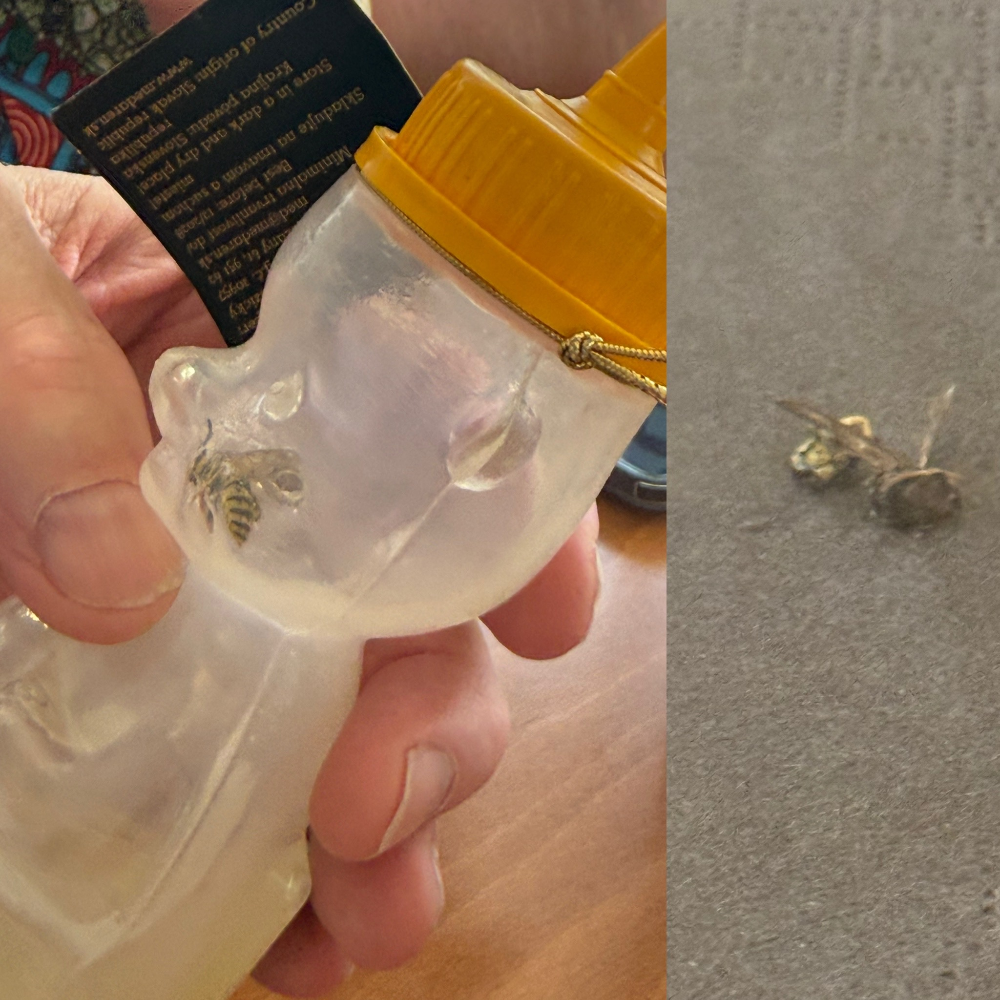
Bratislava: a city of two flies
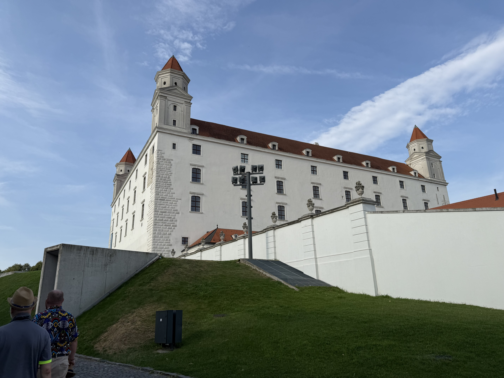
The castle
Wien Hauptbahnhof Train Station
Friday July 31, 2026
Vienna, Austria
We immersed ourselves in Austrian culture at Cafe Dialog, drinking Gösser beer, and chatting with the locals. The star of the evening was Bobby, a Kenyan who Chris was chatting with in Swahili. There was another chap who wanted to talk with us but was too drunk to realise we couldn’t speak German. It was great to meet some real Austrians. Chris has decided that if he ever moved to Vienna, Cafe Dialog would be his ideal local.
Friday brought another warm day and another breakfast at Chillai, our local cafe. Steve thought that the nearby Souvenir shop also sold pasties so you can imagine his disappointment when told him that he’d misread the sign and it was actually Passport photos.
We’ve now made it back to the main station, ready for the trip to Slovakia. After a couple of beers at a sports bar Steve has added another beer mat to his collection. Vienna fridge magnets secured, we are off on the hour long journey to Bratislava.
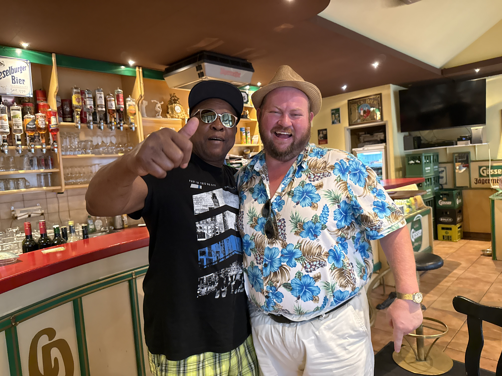
An African ex-pat who loves beer and is fluent in Swahili. Also, Bobby
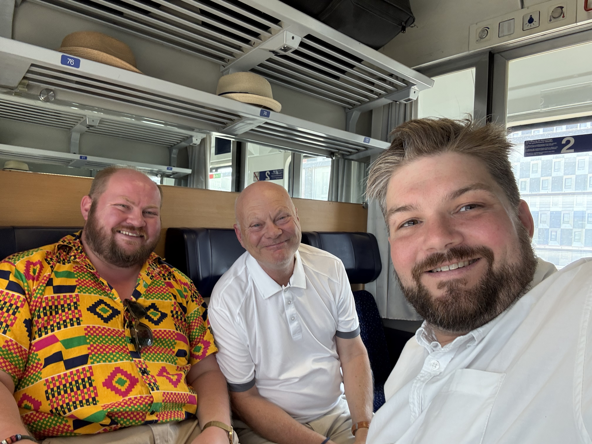
The boys leaving Austria.
Cafe Dialog, Rennweg
Thursday July 30, 2026
Vienna, Austria
Our full day in Vienna started nice and early with a breakfast at our local cafe Chilai, where Steve and Chris enjoyed their traditional Viennese breakfasts and Jay instantly regretted eating a chilli that came with his avocado and egg on toast.
We headed into the main town to see the sights, and tried to get in to the court building to see the views from the rooftop. We queued
for 20 minutes in the intense sun only to be turned away because they’d reached their 25 visitor limit for the hour.
We didn’t dwell on the disappointment and instead went for a walk around the beautiful Belvedere Palace gardens, and took a break from the heat in the café whilst we decided what to do next.
Eventually we settled upon the Military History Museum and after walking for 10 minutes in the wrong direction, decided to splash out on an Uber. Mohammed cheerfully took us to our destination and we were all grateful for the air conditioning now that temperatures had broken the 35 degree line. His pleasant demeanour earned him a €2 tip.
We had an interesting afternoon exploring the museum, the highlight of which was a display containing the car that Archduke Franz Ferdinand was shot in, setting off World War I.
Even though the museum was nice and cool inside we were knackered after the day up until that point, and headed back to our air conditioned AirBNB for a recharge. Jay and Chris then headed out to find a pub, whilst Steve took an afternoon siesta. He is down to his last book for this trip, having completed a 200-page novel between the hours of 5:00am and 7:00am this morning, so it was either sleep or use up his last book and spend the rest of the trip reading nothing but road signs and the back of crisp packets.
We are looking forward to enjoying our last evening in Vienna before our journey continues to Bratislava tomorrow.
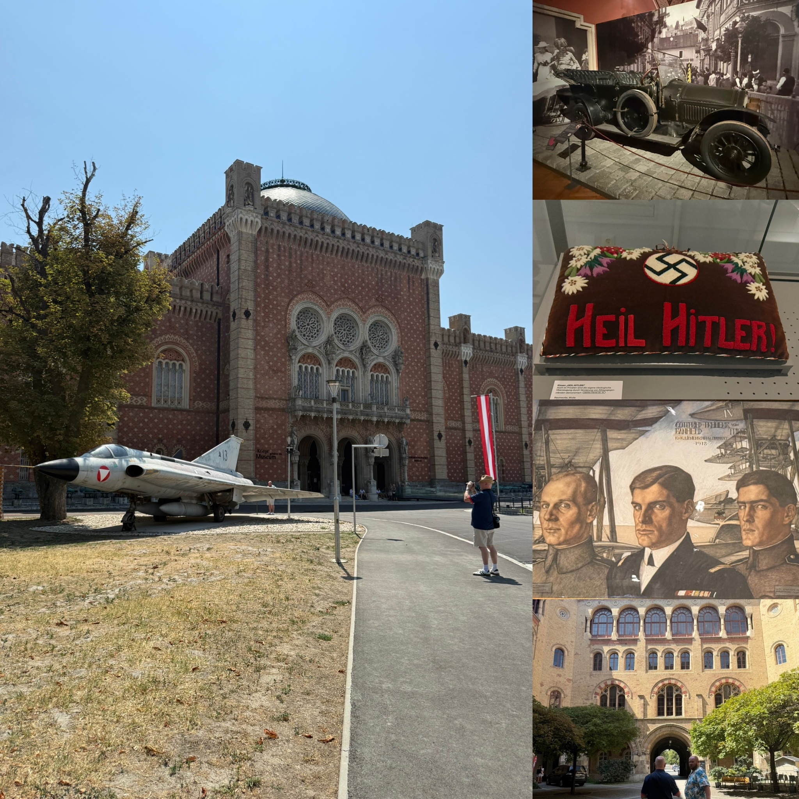
Sights from the military museum
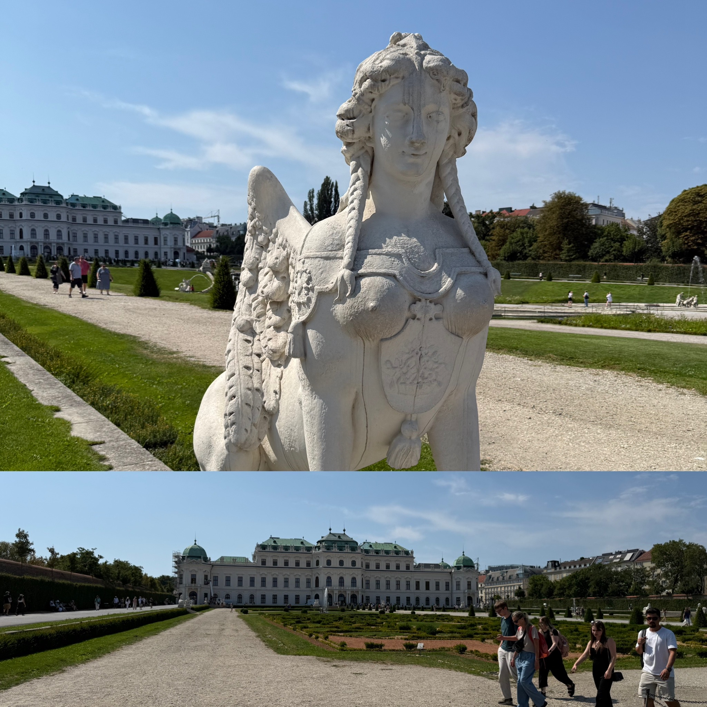
Some kind of lion with breasts; Belvedere Palace
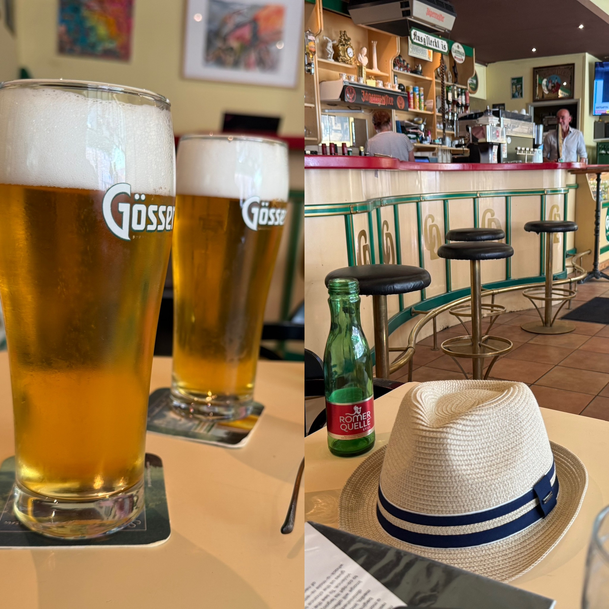
Cafe Dialog - the local's local
Barichgasse 21, Vienna
Wednesday July 29, 2026
Vienna, Austria
On Wednesday morning we met at the Prague main train station ready for our trip to Vienna.
We discovered that our tickets allowed us access to the RegioJet passenger lounge for an hour before departure, where not only were free teas and coffee provided, but also vanilla and pomegranate ice cream. So no prizes for guessing what Jay had for breakfast.
After a short delay of 5 minutes the train pulled in to Platform 2 and we were soon aboard in our reserved table seats. Some of our South Korean friends decided to play Tetris with their suitcases in the luggage rack for the first half an hour, but once they were finished we were settled in for a lovely journey.
All three of us remarked on the quality of the train service, with the attendant giving out free bottles of water and newspapers despite the fact we were in the cheap seats, and Chris was even more pleased to learn that 500ml bottles of beer were available for 70c (60p). 5 bottles, several card games (cribbage, Flip 7 and taxi) and 4 1/2 hours later and we arrived at the main station in Vienna.
We quickly got our bearings in the 30 degree heat and found a local cafe to burn some time in whilst waiting for our AirBNB to become available. Chris and Steve had a couple of pints of the local brew while Jay decided to stick with the Coke after a few heavy days. Steve also scored a multipack of beer mats from the kind barman to add to his collection, although quite what he is planning to do with around 40 identical Zipfer beer mats is anyone’s guess.
We checked into our AirBNB and were delighted to find it was freezing cold and gave us some good relief from the overbearing sun outside. A quick recharge and we were off again to see the sights of Vienna. We got off the underground in Stephansplatz and decided to check out then huge St Stephen's Cathedral which we were all impressed by*, and we managed to convince Chris to join us on a tour of the catacombs. We saw the various tombs, and the jars of internal organs belonging to Hapsburg royalty, followed by the rooms downstairs containing the musty skeletons of 11,000 people, which grossed Jay out even though he was the one who pushed to go there.
A burger at an American burger bar for dinner and a few pints at the local Irish pub, then it was time to head back to the AirBNB for an early night, ready for our full day in Vienna tomorrow.
*We were less impressed by the €6.95 ATM fees we all got stung by, taking cash out to pay for the catacombs tour...
Service RJ1033, Prague to ViennaA happy start to the dayTop left: WW2 Flak tower, Top right: St Stephen's Cathedral, Bottom: Street scenes in Vienna Steve's latest acquisition
Jazz Dock
Tuesday July 28, 2026 (supplemental)
Prague, Czech Republic
Tuesday afternoon proved an enjoyable experience. After visiting Beer Time in Andel for food, quiz and beers we headed down to the river to spend the rest of the day at Jazz Dock with excellent company (the newly-married Mr and Mrs Schofield, as well as a special guest appearance live from the USA by Carley). Not to mention some delicious cocktails, a mojito for Steve and a Pina Colada for Jay.
We made a little game as always, waving at the boats going past and soliciting waves in return. One man on a large dinner cruise boat clearly wanted to wave but was holding himself back. We persevered and he eventually did give in to temptation and returned our waves with a cheeky smile. The evening came to a close with the three travellers giving a rendition of Tony Christie's Amarillo as we danced up the street and dispersed into the night.
Jazz Dock gathering in full swing
Beer Time, Andel
Tuesday July 28, 2026
Prague, Czech Republic
We finished Monday at Lokal, ticking off plenty of beers on the iconic ticket, and followed up with a kebab with all the trimmings from Istanbul (the kebab shop, not the city).
On Tuesday morning we were greeted by sunny intervals, a cool morning which allowed Chris and Steve to get out for a walk whilst Jay took care of some work he’d procrastinated. We visited the Museum of Prague, then afternoon of beer, quizzing and cards followed.
We are leaving for Vienna in the morning so the blog should get more interesting after that…
The boys at the museum, the Lokal ticket, the kebab shop
Letna Park
Monday July 27, 2026
Prague, Czech Republic
After an uneventful flight, we arrived at Prague Airport where Chris sailed through passport control with his residents card and Steve and Jay waited for over an hour behind half the population of South Korea, who had landed just before us.
We did a quick stop at Chris’s and the place Jay is staying before heading to Beer Spot for refreshments and food, and a catch up with Jacob.
Monday morning brought some cloud and rain to Prague and we have decided upon a chilled out day, strolling through several of the city’s parks, admiring peacocks, and settling for the afternoon at Letna beer garden.
The weather might be on the turn today, but we will miss this cool cloudy afternoon on our forthcoming travels!
Lads lads lads
Bristol Airport
Sunday July 26, 2026
Bristol, UK
A late wakeup by Jay and a tyre pressure warning light in Steve's car failed to dampen our spirits and we made it to BRS with time to spare.
Three pints, a crossword, and a bowl of chips (£30!) and we are boarding the plane,
Chris in EasyJet Plus royalty at the front and Steve and Jay herded in the back with the rest of the cattle.